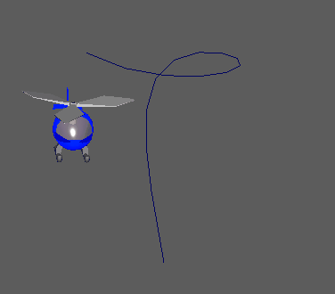

开始执行此步骤之前，请创建路径要使用的曲线。可以通过曲线工具之一导入或创建该曲线。请参见绘制 NURBS 曲线。
注： 如果绘制了一条曲线且要接合两端（即：创建闭合循环），请选择该曲线，切换到“建模”(Modeling)菜单，然后选择。
提示： 在 YouTube Maya 教学频道上查看快速运动路径教程。
通过将对象附加到曲线创建运动路径
- 选择要在路径上设置动画的对象，然后按 Shift 键并选择曲线。
注： 可以按住 Shift 键并选择多个对象，然后将其附加到同一路径曲线。请记住选择上次的路径曲线。
- 在“动画”(Animation)菜单集中，选择“约束 > 运动路径 > 连接到运动路径”(Constrain > Motion Paths > Attach to Motion Path) >
 。
。
- 在连接到运动路径选项(Attach to Motion Path Options)窗口中，执行以下操作：
- 选择动画的“时间范围”(Time range)作为“时间滑块”(Time Slider)（推荐），或者选择“开始/结束”(Start/End)并指定“时间滑块”(Time Slider)范围。
- 启用“跟随”(Follow)。
当“跟随”(Follow)处于启用状态时，“前方向轴”(Front Axis)和“上方向轴”(Up Axis)选项确定三个局部旋转轴中的哪一个分别用于设定对象的前方向和上方向。
- 选择选择用于表示对象前方向的轴作为“前方向轴”(Front Axis)，然后选择用于表示对象的向上方向的轴作为“上方向轴”(Up Axis)。
- （可选）如果希望对象在每条曲线上沿运动路径向内倾斜（就像自行车或摩托车一样），可以选择“倾斜”(Bank)。
- 在“连接到运动路径选项”(Attach to Motion Path Options)窗口中，单击“附加”(Attach)。
对象将移动到曲线上的某个点，如“时间范围”(Time range)设置中所指定。

曲线的两端显示两个带有编号的运动路径位置标记。这些标记指示动画路径的开始帧和结束帧。
- 要查看对象的动画，请单击播放控件中的“播放”(Play)按钮。
在本主题提供的示例中，直升机在运动路径上的方向呈静态角度，这使其指向错误的降落路线。要了解如何在运动路径对象的方向上设置关键帧，请参见调整路径对象的方向。
提示： 如果对象没有沿运动路径移动，则可能是由于该对象（例如，插图中所示的对象）的父对象上的现有变换导致的。若要强制对象沿路径移动，请打开大纲视图并选择父对象，或者将该对象的父对象（而不是该对象本身）附着到运动路径，然后移动父对象的枢轴，直到该对象（其子对象）位于该路径上。